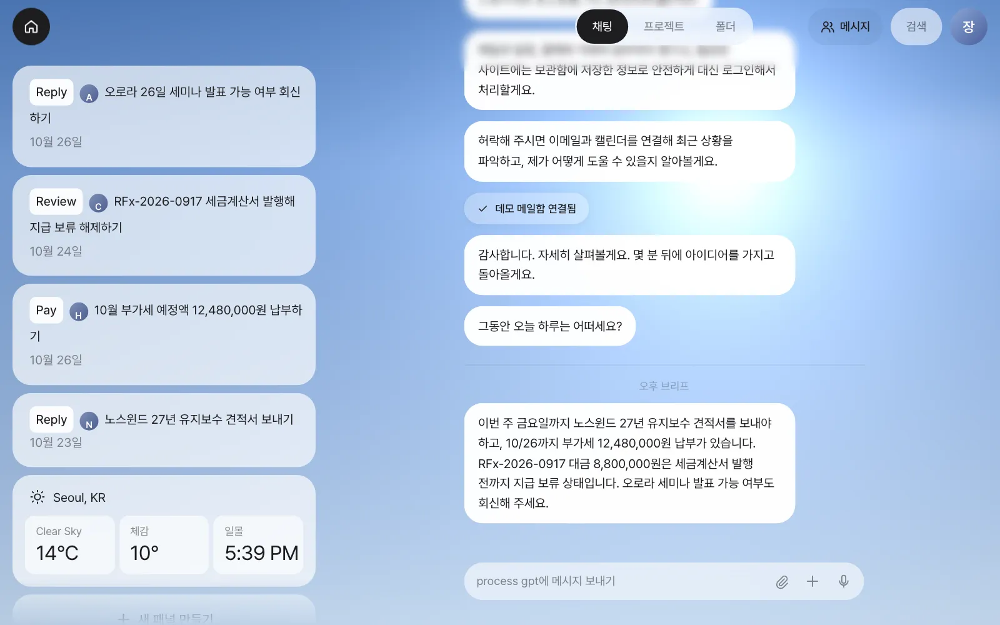
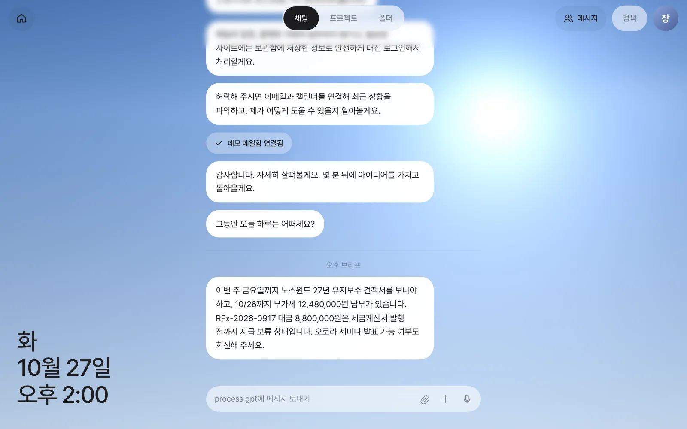
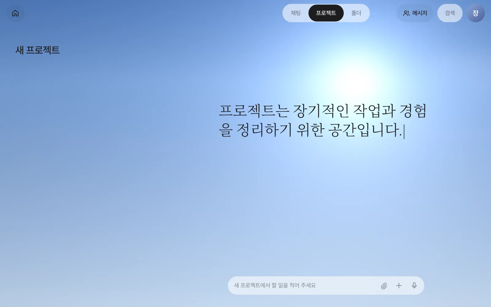
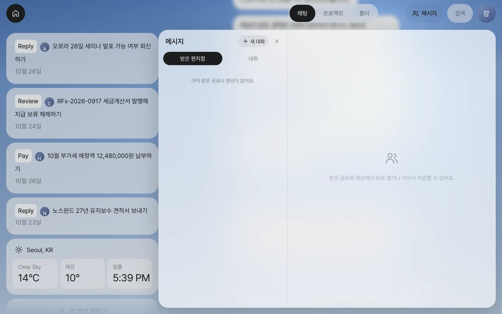
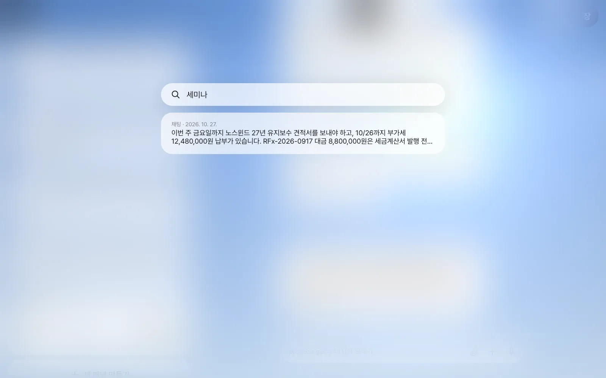
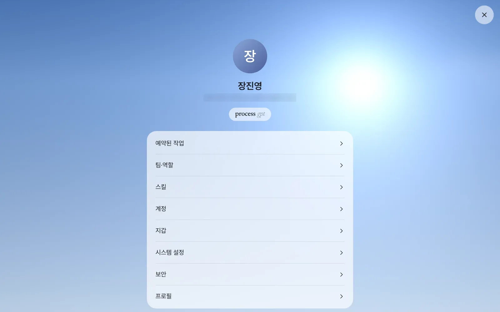
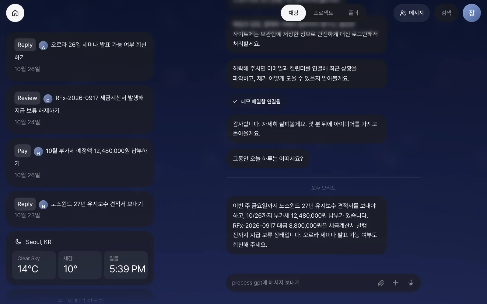
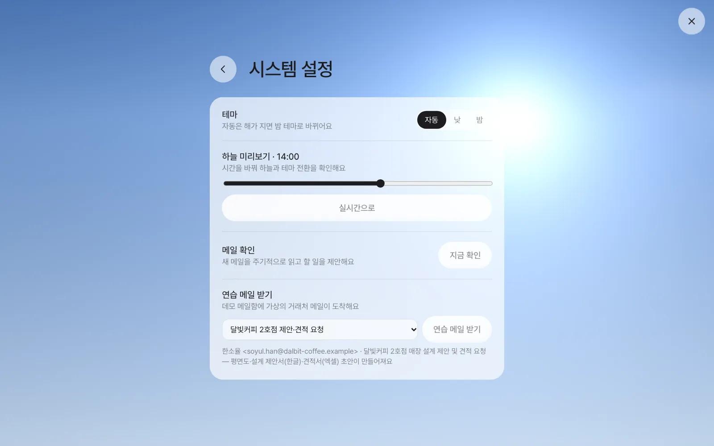
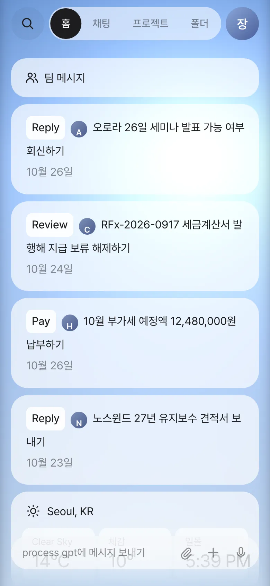

홈 카드, 채팅, 위쪽 막대(채팅·프로젝트·폴더, 메시지, 검색, 설정), 낮과 밤, 휴대폰 화면까지 한 바퀴 둘러봅니다. 이 앱은 화면이 한 장이고, 거의 모든 일을 가운데 입력창 하나로 시킵니다.
화면은 한 장#
1장에서 첫 로그인과 메일 연결을 마쳤으니, 실습에 들어가기 전에 화면을 한 바퀴 둘러봅니다. 메뉴와 페이지가 많은 업무 시스템과 달리, Process GPT Lite는 화면 한 장에서 일합니다. 왼쪽에는 지금 챙길 일이 카드로 쌓이고(홈), 가운데에는 비서와의 대화가, 아래에는 입력창이 있습니다. 무엇을 하든 입력창에 말로 시키고, 결과는 대화 속 카드로 돌아옵니다.

| 자리 | 이름 | 하는 일 | 자세히 |
|---|---|---|---|
| 왼쪽 위 원형 집 버튼 | 홈 | 홈(카드 모음)을 펴고 접습니다 | 아래 |
| 가운데 위 | 「채팅 · 프로젝트 · 폴더」 | 세 작업 공간을 오갑니다 | 아래 |
| 오른쪽 위 | 「메시지」 | 팀원과 주고받는 메신저와 받은 편지함 | 14장·15장 |
| 오른쪽 위 | 「검색」 | 지난 대화에서 낱말로 찾기 | 아래 |
| 오른쪽 끝 동그라미 | 설정 | 이름 첫 글자가 적힌 동그라미. 예약·팀·스킬·계정·보안 | 아래 |
| 아래 가운데 | 입력창 | 말로 시키기. 📎 파일 첨부, ＋ 새 패널, 🎙 받아쓰기 | 3장 |
홈 — 지금 챙길 일#
홈은 비서가 “지금 이걸 처리하시면 돼요”라고 올려 두는 카드 모음입니다. 1장에서 데모 메일함을 연결했으므로, 비서가 메일 다섯 통을 읽고 처리할 일이 있는 네 통을 카드로 만들었습니다(뉴스레터 한 통은 건너뛰었습니다).
카드 맨 앞의 영어 단어는 비서가 대신 할 일입니다. 카드를 누르면 비서가 그 일을 채팅에서 시작합니다(5장).
| 동사 | 뜻 | 동사 | 뜻 |
|---|---|---|---|
| Reply | 답장 | Review | 검토 |
| Pay | 납부 | Call | 전화 |
| Release | 처리(보류 풀기) | Book | 예약 |
| Remind | 알림 | Sign | 서명 |
| Add | 추가 |
카드에 마우스를 올리면 오른쪽 위에 ×가 나타나 카드를 치울 수 있습니다. 홈에는 이 밖에도 다음 카드가 쌓입니다.
| 카드 | 언제 생기나 | 다루는 장 |
|---|---|---|
| 결정 · 입력 | 프로세스의 한 단계가 나에게 배정됐을 때. 선택지가 있는 단계(결재 등)는 카드에서 바로 결정합니다 | 18장 |
| 공유 · 멘션 · 요청 | 팀원이 파일을 보내거나 @로 나를 불렀을 때 | 14장 |
| 추천 · 제약 | 반복된 일에서 프로세스를 추천할 때(관리자), 프로세스에 새 병목이 생겼을 때 | 19장·20장 |
| 초안 검토 | 고객 메일이 문서를 요청해 비서가 초안을 미리 만들었을 때 | 9장 |
| 패널 앱 | 말로 만든 미니앱(할 일 목록, 휴가 관리 등) | 12장 |
| 날씨 | 늘 있습니다. 하늘 배경과 같은 위치의 날씨와 일몰 시각 | |
| 새 패널 만들기 | 맨 아래 버튼. 누르고 원하는 패널을 설명합니다 | 12장 |
집 버튼을 다시 누르면 홈이 접히고, 그 자리에 요일·날짜·시각이 크게 보입니다. 대화에 집중하고 싶을 때 접어 두세요.

채팅 — 하나의 긴 대화#
가운데 채팅은 하나의 긴 대화입니다. 새 대화방을 만들 필요가 없습니다. 달빛커피 이야기를 하다가 출장 숙소를 물어도 되고, 메일 브리프와 예약 작업의 결과도 이곳에 쌓입니다. 주제가 섞여도 괜찮은 이유는, 비서가 메시지마다 어느 이야기의 후속인지 판단해 주제별 대화로 나눠 두기 때문입니다. 대화가 둘 이상이 되면 채팅 맨 위에 「대화 N개 · 맥락별로 보기」가 나타납니다(4장).
채팅에서 눈여겨볼 작은 표시들입니다.
- 날짜 줄 — 날이 바뀌는 자리에 “10월 28일 수요일”처럼 날짜가 들어갑니다.
- ··· 읽음 — 내가 보낸 마지막 메시지 아래에 붙습니다. 비서가 메시지를 받았다는 뜻입니다.
- 상태 줄 — 비서가 일하는 동안 입력창 바로 위에 “찾아보는 중”, “문서 만드는 중”처럼 지금 하는 일이 흐리게 보입니다.
- 구분선 — “오후 브리프”나 “메일 · ○○ 견적서 요청”처럼 비서가 스스로 시작한 일은 구분선 아래에 놓입니다.
프로젝트와 폴더#
위쪽 「채팅 · 프로젝트 · 폴더」 세 칸이 작업 공간입니다.
| 공간 | 무엇을 하는 곳 | 다루는 장 |
|---|---|---|
| 채팅 | 매일의 일. 비서와 나누는 긴 대화 | 3장~6장 |
| 프로젝트 | 오래 가는 일을 따로 모아 두는 곳. 왼쪽 「새 프로젝트」에서 할 일을 적으면 제목이 붙은 프로젝트가 생기고, 그 안의 대화는 채팅과 섞이지 않습니다. 진행 중인 프로세스도 여기에 나옵니다 | 18장 |
| 폴더 | 팀이 함께 쓰는 공유 폴더. 드라이브처럼 파일을 두고, 같은 일을 여러 갈래로 고쳐 비교합니다 | 13장 |

메시지·검색·설정#
메시지는 팀원과 주고받는 메신저입니다. 「받은 편지함」에는 팀원이 공유한 산출물과 나를 부른 @멘션이, 「대화」에는 1:1·그룹 대화방이 있습니다. 혼자 쓰는 지금은 비어 있습니다. 4부에서 김민지·박서연과 함께 채웁니다.

검색은 지금까지의 채팅·프로젝트 메시지를 낱말로 찾습니다. 예를 들어 세미나를 치면 오후 브리프에서 세미나를 언급한 문장이 나옵니다. 결과를 누르면 그 대화로 갑니다.

설정은 오른쪽 끝 동그라미를 눌러 엽니다.

| 메뉴 | 내용 | 다루는 장 |
|---|---|---|
| 예약된 작업 | “매일 아침 8시에…”처럼 정해 둔 일의 목록과 실행 기록 | 11장 |
| 팀·역할 | 팀원 목록, 프로세스 역할을 누가 맡는지. 바꾸는 것은 관리자만 합니다 | 18장·25장 |
| 스킬 | 저장된 업무 방법(스킬) 목록과 내용 | 10장 |
| 계정 | 내 이름, 메일·외부 서비스 연결(「연결 바꾸기」), 사이트 로그인, API 키 (보관함) | 1장·5장·6장 |
| 지갑 | 결제 카드 (보관함) | 6장 |
| 시스템 설정 | 테마(자동·낮·밤), 하늘 미리보기, 메일 지금 확인, 데모 메일함이면 「연습 메일 받기」 | 아래·5장 |
| 보안 | 보관함 암호화 정보, 내 보관함 검증, 보관함 활동 기록 | 6장 |
| 프로필 | 이름·이메일·생년월일 (보기만. 이름은 「계정」에서 바꿉니다) |
낮과 밤#
배경의 하늘은 그림이 아니라 지금 이 시각, 내 위치의 하늘입니다. 해의 높이를 계산해 색을 정하고, 날씨(구름·비)도 반영합니다. 해가 지면 화면 전체가 밤 테마로 바뀝니다.

「설정 › 시스템 설정」에서 테마를 자동·낮·밤 가운데 고를 수 있습니다. 「하늘 미리보기」 막대를 움직이면 다른 시각의 하늘과 테마를 미리 보고, 「실시간으로」를 누르면 돌아옵니다. 같은 화면의 「메일 확인 › 지금 확인」은 다음 주기를 기다리지 않고 메일을 바로 읽게 합니다. 데모 메일함을 연결했다면 맨 아래에 「연습 메일 받기」가 있어, 실습에 쓰는 가상의 거래처 메일을 골라 받을 수 있습니다(5장).

주소로 시각 고정하기
주소 끝에 ?hour=21을 붙이면 그 시각의 하늘로 엽니다. 발표 화면을 늘 낮으로 보여 주고 싶을 때 ?hour=14처럼 씁니다. 이 튜토리얼의 사진도 그렇게 찍었습니다.
휴대폰과 Android#
폭이 좁은 화면(휴대폰)에서는 배치가 바뀝니다. 위쪽에 「홈 · 채팅 · 프로젝트 · 폴더」 탭이 생기고, 홈은 화면 전체를 쓰는 탭이 되며, 입력창이 그 아래에 붙습니다. 팀 메시지는 홈 맨 위 카드로 들어갑니다.

Android에서는 서버 주소만 넣으면 쓰는 앱도 있습니다(시연 영상). 설치 PC를 다른 기기에서 열 수 있게 하는 방법은 1장의 “포트와 접속 주소”를 보세요.
영상으로 보기
Process GPT Lite 둘러보기에서 첫 로그인부터 홈 카드와 밤 테마까지 이어서 볼 수 있습니다.
다음 장으로#
화면 구성을 익혔으니 이제 일을 맡겨 봅니다. 다음 장에서는 달빛커피의 2호점 요청을 비서에게 붙여 넣고 정리표와 체크리스트를 받습니다(3장).
확인 문제
- 홈을 접었다 펴 보세요. 접었을 때 왼쪽 아래에 무엇이 보이나요?
- 「검색」에서
견적을 찾아보세요. 어떤 메시지가 나오나요? - 「설정 › 시스템 설정」에서 하늘 미리보기를 저녁 7시로 옮겨 보고, 테마가 바뀌는지 확인한 뒤 「실시간으로」 돌려놓으세요.
- 홈의 카드 네 장은 각각 어떤 메일에서 왔을까요? 동사만 보고 짐작해 보세요.
답
- 요일·날짜·시각이 크게 보입니다.
- 오후 브리프의 “노스윈드 27년 유지보수 견적서를 보내야 하고…” 문장처럼
견적이 들어간 메시지가 날짜와 함께 나옵니다. 검색은 메일 원문이 아니라 채팅에 남은 메시지를 찾습니다. - 저녁 7시는 해가 진 뒤라 테마 「자동」이면 밤 테마로 바뀝니다. 「낮」으로 고정해 두었다면 하늘만 바뀌고 테마는 그대로입니다.
- Reply(세미나 발표 문의 — 답장), Review(세금계산서 미발행으로 대금 지급 보류 — 발행해서 보류 풀기), Pay(부가세 예정 고지 — 납부), Reply(유지보수 견적 요청 — 답장). 동사와 문구는 실행할 때마다 조금씩 다릅니다. 같은 메일이 Review 대신 Release(보류 풀기)로 나오기도 합니다.